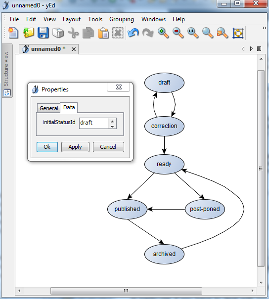

Workflow File Source Component ¶
The workflow file source component reads workflow definitions from files, and provide Status, Workflow and Transition object. It is not usually accessed directly but though the SimpleWorkflowBehavior who loads it by default.
To be able to handle various file formats, the WorkflowFileSource component relies on a modulable architecture where the task of
locating and loading a file is delegated to a class implementing the WorkflowDefinitionLoader interface. There are currently 3 types
of workflow definition loader available with yii2-workflow:
PhpClassLoader: loads the workflow definition from a class that implements theIWorkflowDefinitionProviderinterface. This is the default loader used by the file source component.PhpArrayLoader: loads the workflow definition from a PHP file that must returns a PHP array representing the workflow definition.GraphmlLoader: loads the workflow definition from a Graphml file.
The two first loader are somewhat equivalent in the way they expect to read workflow definition: they both expected to get a PHP array. On the other side, the GraphmlLoader expects to read an XML file.
Workflow definition as PHP Array ¶
Both PhpClassLoader (default loader) and PhpArrayLoader expect to read workflow definition as PHP array. In this chapter we are going
to describe the structure of this array.
Array Structure ¶
The Workflow ¶
The PHP array defining a workflow is an associative array that must contains 2 keys : initialStatusId and status.
- initialStatusId :
stringthat represents the ID of the initial status - status :
arrayassociative array defining each status that belonging to the workflow.
[
'initialStatusId' => 'draft',
'status' => [
// definition of statuses
]
]Status List Definition ¶
The status list definition is an associative array where keys are status Ids and values are status definitions. If a status doesn't need any particular definition, it can be defined directly as a string value.
In the example below, both draft and pusblised have a specific definition, but archived doesn't.
[
'initialStatusId' => 'draft',
'status' => [
'draft' => [ // single status definition ]
'published' => [ // single status definition ]
'archived'
]
]Single Status Definition ¶
A Single Status Definition is an associative array that may contains 2 specific keys : transition and label
- transition :
array|stringlist of ids for all statuses that can be reached. - label :
stringuser friendly name. If not set, the label is automatically created from the status Id.
[
'initialStatusId' => 'draft',
'status' => [
'draft' => [
'label' => 'Draft State'
'transition' => // transitions definition
]
]
]Transition Definition ¶
A Transition Definition is an array or a string defining the list of status that can be reached from the current status. In the example below, we are defining a workflow with following transitions:
- draft -> published
- published -> draft
- published -> archived
As you can see, there is no transition that leaves the status archived. Once an item reaches this status it will never move to another status again: archived is called a final status.
[
'initialStatusId' => 'draft',
'status' => [
'draft' => [
'label' => 'Draft State'
'transition' => 'published'
],
'published' => [
'transition' => ['draft','published']
],
'archived'
]
]Alternatively you can also use a comma separated list of status Id to define a transition. For example, transitions for the published status above , could also be written this way :
'published' => [
'transition' => 'draft, published'
]Metadata ¶
Ok, we are now able to create workflows ! We can define statuses and transitions between them. As you you can see, the minimum attributes for a status is its id and optionally we can set a label, but that's all. Well, that's not a lot. What if we need to add more properties to our statuses ? Like for instance it could be nice to associate a color with each status, and display this color to the user (users like colors). The solution is metadata.
The metadata allows you to add almost any attribute not only to statuses, but also to workflow and transition. Let's see that on an example where we are going to add a color and an icon metadata to the published status.
'published' => [
'metadata' => [
'color' => 'green',
'icon' => 'glyphicon glyphicon-pencil'
]
]Later on we will be able to retrieve these value of course, and use them the way we want (for instance with a nice and colorful display).
Example ¶
As an example we will use our Post workflow desinged earlier to manage our publishing plateform web app.

Below is the definition of this workflow ready to be used by the SimpleWorkflow behavior.
namespace app\models;
class PostWorkflow implements raoul2000\workflow\base\IWorkflowDefinitionProvider
{
public function getDefinition() {
return [
'initialStatusId' => 'draft',
'status' => [
'draft' => [
'label' => 'Draft Document',
'transition' => ['correction']
'metadata' => [
'color' => 'yellow'
]
],
'correction' => [
'transition' => ['draft','ready'],
'metadata' => [
'color' => 'grey'
]
],
'ready' => [
'transition' => ['draft', 'correction', 'published'],
'metadata' => [
'color' => 'blue'
]
],
'published' => [
'transition' => ['ready', 'archived'],
'metadata' => [
'color' => 'green'
]
],
'archived' => [
'transition' => ['ready'],
'metadata' => [
'color' => 'black'
]
]
]
];
}
}Loader components ¶
PHP class Loader ¶
Loading workflow definitions from a PHP class.
Namespace : workflow location ¶
By default the PhpClassLoadercomponent loads workflows from the app\models namespace.
So for example in the following delcaration, the default workflow associated with the Post model will be loaded from
the class app\models\MyWorkflow :
namespace app\models;
class Post extends \yii\db\ActiveRecord
{
public function behaviors()
{
return [
[
'class' => '\raoul2000\workflow\base\SimpleWorkflowBehavior',
'defaultWorkflowId' => 'MyWorkflow'
]
];
}
}If you need to change the default namespace value you have two options : the fast one and the not so fast one.
Standard ¶
In general if you need to change any configuration setting, you must explicitely declare it as a Yii2 application component and not rely
on SimpleworkflowBehavior to do it for you.
In the example below, we are defining the source component using the default Id (workflowSource)
and set the namespace used by PhpClassLoader to the location where workflow definitions are supposed to be located (here @app/models/workflows).
$config = [
'components' => [
'workflowSource' => [
'class' => 'raoul2000\workflow\source\file\WorkflowFileSource',
'definitionLoader' => [
'class' => 'raoul2000\workflow\source\file\PhpClassLoader',
'namespace' => '@app/models/workflows'
]
],As you may have guessed, there is only one namespace per workflow source component so you are encouraged to locate all your workflows in the same namespace. In the case you must load workflows from various location, you should declare another workflow source component (one per namespace) but remember that each workflow source component serves workflows from only one namespace (folder).
The magic alias ¶
As the PhpClassLoader is the default loader used with the default source component, it is a common task to change the namespace value
used to load PHP classes. Consequently having to explicitely declare component just to change one configuration setting is too much work (and
we know good developpers are lazy). For this purpose the alias @workflowDefinitionNamespace is available to define globally the namespace value.
For instance, in you index.php file, declare this alias :
Yii::setAlias('@workflowDefinitionNamespace','app\\models\\workflows');By doing so, all workflow definition classes will be loaded from the app\models\workflows namespace. Note that this alias overrides any specific
namespace configuration that you may have defined the standard ways.
PHP array Loader ¶
Loading workflow definitions for a PHP array stored in a file.
First configure the workflow file source component to use the PHPArrayLoader class. In this example, workflow definition files are assumed
to be located in @app/models/workflows.
$config = [
'components' => [
'workflowSource' => [
'class' => 'raoul2000\workflow\source\file\WorkflowFileSource',
'definitionLoader' => [
'class' => 'raoul2000\workflow\source\file\PhpArrayLoader',
'path' => '@app/models/workflows'
]
],Now if we want to create the definition for the workflow post, we just create the file post.php in the folder @app/models/workflows.
return [
'initialStatusId' => 'draft',
'status' => [
'draft' => [
'transition' => ['publish','deleted'
]
],
'publish' => [
'transition' => ['draft','deleted']
],
'deleted' => [
'transition' => ['draft']
]
]
];Workflow definition as Graphml file ¶
Loading workflow definition from graphml files.
From the The GraphML File Format web site :
GraphML is a comprehensive and easy-to-use file format for graphs. It consists of a language core to describe the structural properties of a graph and a flexible extension mechanism to add application-specific data.
Graphml file can be generated by various graph design applications like yEd (that I use).
Before being able to load a Graphml file, you must ensure that following requirements are met :
- nodes labels are assigned to status Id and all nodes must have a label (i.e. all status must have an id)
- a custom property called initialStatusId must be added to the workflow and assigned with a valid status Id
$config = [
'components' => [
'workflowSource' => [
'class' => 'raoul2000\workflow\source\file\WorkflowFileSource',
'definitionLoader' => [
'class' => 'raoul2000\workflow\source\file\GraphmlLoader',
'path' => '@app/models/workflows'
]
],Using yEd ¶
yEd is a powerful desktop application that can be used to quickly and effectively generate high-quality diagrams.
With this (free) application you can create a workflow and save it as a graphml file that can be used as a source for SimpleWorkflow. This is interesting in particular if you have to deal with big workflows made of more than 10 status, with plenty of transitions that make it look like a plate of spaghetti.
The only tricky thing is that you must define the custom property initialStatusId that is required by SimpleWorkflow. This can be done easily :
- create a new empty document
- click
Edit > Manage Custom Properties ... - in the "Graph Properties" table, click on the "Add a New property" button (green plus sign)
- set initialStatusId as name and leave type as default (text)
- close the dialog box
You're ready to go ! Once your workflow is ready to be used with SimpleWorkflow make sure that you have assigned the correct value
to the initialStatusId custom property. To do so, unselect any item and press F6 key (or select Edit > Property... from the menu).
In the property dialog box, select the data panel, and enter the value of the initialStatusId in the appropriate text control. Validate
with ok.

Your workflow is now ready to be used as a workflow source by SimpleWorkflow
Cache ¶
The WorkflowFileSource is able to use a cache component to optimize the workflow definition loading task, that can be significant, in particular with
workflows containing a lot of status. Another opportunity to use a cache component is if the workflow definition is provided as a Graphml file. In this such a case,
if no cache is used, the WorkflowFileSource component needs to read and parse the Graphml file quite often (at least once per request).
To configure a cache component you must use the definitionCache parameter. For example :
$config = [
'components' => [
'workflowSource' => [
'class' => 'raoul2000\workflow\source\file\WorkflowFileSource',
'definitionCache' => [
'class' => 'yii\caching\FileCache',
],
],